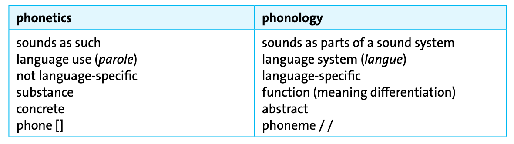
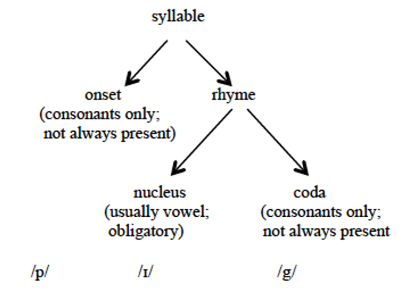

Introduction to linguistics — Course Website
November 10, 2025
Last week we learned about phonetics:

Kortmann (2020): 28
Kortmann (2020): 37
“Phonemes:
Definition: allophones are realisational variants of a phoneme.
Example: /l/ in English — two main allophones in complementary distribution:
Clear [l]
Dark [ɫ]
Allophones are in complementary distribution and do not distinguish meaning
“Complementary distribution:
“Free variation:
Kortmann (2020): 38
“Minimal pairs:
Find minimal pairs for the following pairs of English phonemes:
Kortmann (2020): 38–39
“Distinctive features:
[+ CONSONANT, – VOICED, – NASAL, + LABIAL, + CLOSURE, + PLOSIVE],[+ CONSONANT, + VOICED, + NASAL, – LABIAL, + CLOSURE, – PLOSIVE].”Kortmann (2020): 39
“Phonotactics:

Identify the onset, nucleus, and coda in each of the following monosyllabic words and indicate if the syllables are open or closed.
| Word | IPA | Onset | Nucleus | Coda | Type | |
|---|---|---|---|---|---|---|
| 1. | spread | /spred/ | /spr/ | /e/ | /d/ | closed |
| 2. | glimpse | /glɪmps/ | /gl/ | /ɪ/ | /mps/ | closed |
| 3. | new | /njuː/ | /nj/ | /uː/ | — | open |
Basics:
Properties of English word stress:
Key principles:
Examples:
| Word | Weak form | Example | Strong form | Example |
|---|---|---|---|---|
| and | /ənd/, /ən/, /n/ | fish and chips | /ænd/ | It was him AND her. |
| a | /ə/ | take a look | /eɪ/ | Not A coat but THIS one. |
| his | /ɪz/ | take his dog | /hɪz/ | That was HIS dog. |
| could | /kəd/ | this could be true | /kʊd/ | How COULD you? |
Definition:
Functions:
Definition: omission of sounds in connected speech to make articulation easier
Common types:
1. Consonant elision: especially /t/ and /d/ in consonant clusters
2. Vowel elision: especially weak vowels in unstressed syllables
3. /h/ dropping: in unstressed function words
Definition: the influence of one sound on the articulation of another sound
Types:
Consider the IPA symbols in bold print in the following transcriptions:
a) The process is assimilation — sounds become more similar or identical to neighbouring sounds.
b) Types of assimilation in examples 1–5:
| Example | Change | Type of Assimilation |
|---|---|---|
| decisive factor | v → f | regressive – total |
| commonwealth | n → m | regressive – partial |
| chicken | n → ŋ | progressive – partial |
| don’t miss your train | sj → ʃʃ | reciprocal – total |
| thing | vowel → ĩ | progressive – partial (nasalisation) |
c) Connection to the negative prefix:
Insertion of /r/ between vowels to prevent hiatus (especially in RP)
1. Linking /r/: pronouncing written ‘r’ before a vowel
2. Intrusive /r/: inserting /r/ where no ‘r’ exists in spelling
Read the following sentence pairs and describe the difference in the pronunciation (RP & GA) of the words in bold print:
Key concept: GA is rhotic (/r/ always pronounced); RP is non-rhotic (/r/ only before vowels)
| Example | Before consonant | Before vowel | Type |
|---|---|---|---|
| 1. far | RP: /fɑː/ vs GA: /fɑːr/ | Both: /fɑːr ɪz/ | Linking r |
| 2. spare | RP: /speə/ vs GA: /sper/ | Both: /spe(ə)r ə/ | Linking r |
| 3. idea | RP: /aɪˈdɪə/ vs GA: /aɪˈdiːə/ | Both: /aɪˈdɪər əv/ | Linking r |
| 4. flaw | RP: /flɔː/ vs GA: /flɑː/ | RP: /flɔːr ɪn/ vs GA: /flɑː ɪn/ | Intrusive r (RP only) |
Note: Intrusive r occurs in RP even when no ‘r’ is in the spelling (flaw in)
Segmental phonology:
Suprasegmental phonology:
Connected speech processes:
Read Herbst (2010): ch. 11.1–11.2